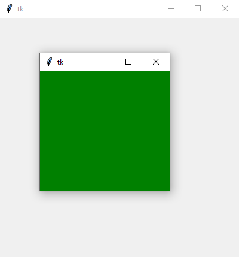

tk.Toplevel
Hierbei handelt es sich um ein Hauptfenster.
tk.Toplevel erzeugen
t = tk.Toplevel(parent, Optionen)
| Optionsname | Beschreibung |
|---|---|
| allgemeine tk-Widget-Optionen | |
| highlightbackground, highlightcolor, highlightthickness | Einstellungen für den Highlightrahmen |
| padx, pady | Abstand des Widgets vom Parent, Extra Platz. Siehe auch Dimensionsangaben |
| spezielle tk.Toplevel-Optionen | |
| background | Normale Hintergrundfarbe |
| backgroundimage | Hintergrundbild |
| colormap | Verwendete Colormap, 'new' oder der Name
eines anderen Fensters, dessen Colormap kopiert wird |
| container | Boolean, tk.Toplevel kann als Container für andere Toplevel-Fenster dienen |
| height, width | Höhe, Breite, siehe auch Dimensionsangaben |
| menu | Angabe eine Menüzeile, siehe Menu erzeugen |
| screen | Angabe eines Screens, auf dem das Fenster plaziert wird. Kann nur beim Erstellen angegeben werden. |
| tile | Boolean, Angabe, ob das backgroundimage in
Tile-Darstellung (ehrfach kopiert und gekachelt) erscheinen soll.
False ist zentriert |
| use | Angabe eines Container-Fensters (s. Option container),
in dem dieses Fenster eingefügt wird. Kann nur beim Erstellen angegeben werden.
TODO: geht nicht? |
| visual | TODO |
tk.Toplevel kennt außerdem die Standardoptionen: class_, borderwidth, cursor, relief, und takefocus
Das folgende Programm stellt ein einfaches Toplevelfenster bereit und nutzt einige der Konfigurationen aus obiger Tabelle:
import tkinter as tk
from tkinter import ttk
class A(tk.Tk):
def __init__(self):
super().__init__()
self.geometry('400x400')
self._createWidgets()
def _createWidgets(self):
t = tk.Toplevel(self, background='green',
width=200, height=200)
if __name__ == '__main__':
window = A()
window.mainloop()Toplevel-Methoden
Es sind die folgenden allgemeinen
Konfigurationsmethoden
bekannt: cget(…) und configure(…)